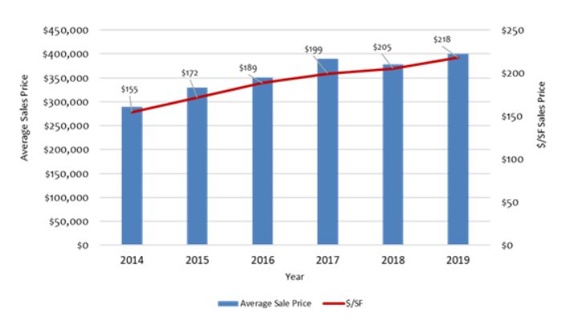

Introduction
Financial Considerations
Demographics
Regional Demographics (2019) RVMD is situated against the foothills southwest of Highlands Ranch in the growing Denver South Market. There are over 6,000 residents and just over 2,000 households. It is a relatively young community compared to Castle Pines, Castle Rock, and Douglas County. The median age of residents is 36.8 years and 30% of the population is 17 years of age or younger. Located in prosperous Douglas County, RVMD’s median household income is approximately $108,000 and its average household income is estimated at $123,000. Almost all (92+%) occupied housing units in RVMD are owner-occupied.
Sales Trends
Since 2014, average single family detached home sales prices in RVMD have steadily increased by more than 7% per year. In 2019, average sales prices were approximately $400,000. Sales prices have remained competitive at about $220 per square foot, higher than the Meadows at Castle Rock development, and just under the average sales price per square foot in Castle Pines. Because RVMD homes are smaller on average (under 2,000 square feet) than other communities analyzed, their overall single family residential sales prices are lower and represent great values for residents.
Active Recreation and Pool Comparison
Residents in successful master planned communities such as Highlands Ranch, the Meadows at Castle Rock, Stapleton, and Reunion, typically have relatively easy access (ie 5 minute drive) to recreation facilities, which may either be provided by the master developer or the local governmental municipality jurisdiction. Stapleton has a number of seasonally-operated neighborhood pools, several of which are within walking distance of residential neighborhoods. In contrast, access is 20 miles away for RVMD residents to Lilley Gulch, Ridge, and Peak Community and Wellness Centers, made available through a partnership with Foothills Park and Recreation District.
According to interviews, Oakwood Homes (the developer of Reunion and Green Valley Ranch) plans for 24 square feet per person of “active” recreational space for their master planned communities. Using this metric, estimated current “active” recreational demand at RVMD is 23,000 square feet which suggests the District could accommodate an additional community recreation facility for area residents.
According to the Trust for Public Land, properties that are within 500 feet of community facilities have a 5% higher value. According to the National Recreation and Parks Association, the average values of homes next to a greenbelt in Boulder, Colorado, were 32% higher than those 3,200 feet away. This direct benefit, however, is dependent upon the quality of the facilities.
Debt Service Overview and Future Resources
The Roxborough Village Metropolitan District’s debt service mill levy is expected to be fully discharged in 2021, when the District makes the final payments on its existing bonds.
Fortunately, in January 2020, the RVMD Board of Directors was able to lower the district mill levy (property taxes) for debt service, reducing overall Roxborough Village taxes by about 16.5%. This translated to an annual savings of about $650 on a $400,000 home. The District’s general operating mill levy will stay at 12.087, as it has been since the District was initially formed in 1985.
The debt service pays off large capital improvements or in the case of RVMD, the 1980s bankruptcy. Debt service is generally financed through bonds. RVMD property taxes have slowly paid back these bonds over many years, and your Board of Directors has worked to progressively refinance and lower the District’s debt service mill levy at every opportunity. In 2013, the debt service mill levy was set at 45 mills, and then was decreased to 34 mills in 2017, and as of January 2020, reduced to 10.2 mills. This was a significant milestone for all residents in Roxborough, ushering in an era of lower taxes for every homeowner in the District.
The recommendation would be to determine the level of interest in a vote to support funding the capital improvements, maintenance and operating needs outlined in the Master Plan. Based on the preliminary financial analysis conducted as a part of this process, an estimated 10.2 mill levy (which would require a vote) would potentially generate a minimum of over $805,000 annually (2020-2021 assumptions) for the Roxborough Village Metropolitan District budget. This could result in enough property tax revenues to pay for capital improvements such as a potential pool and community facilities as well as other capital improvements. Property values have maintained a consistent upward trajectory over time indicating that projected revenues for the district would also rise. At the same time, however, additional capital improvements may trigger the need to examine the General Fund mill levy of 12.087 in order to ensure that the District has enough revenues to pay for ongoing operations and maintenance. In other words, current revenue streams would allow for only smaller improvements, and over a longer period of time.
